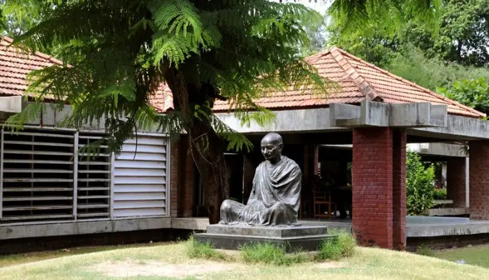
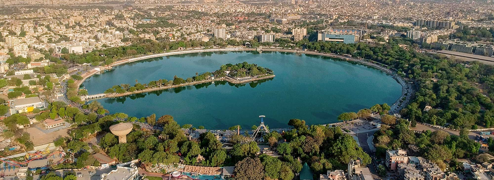
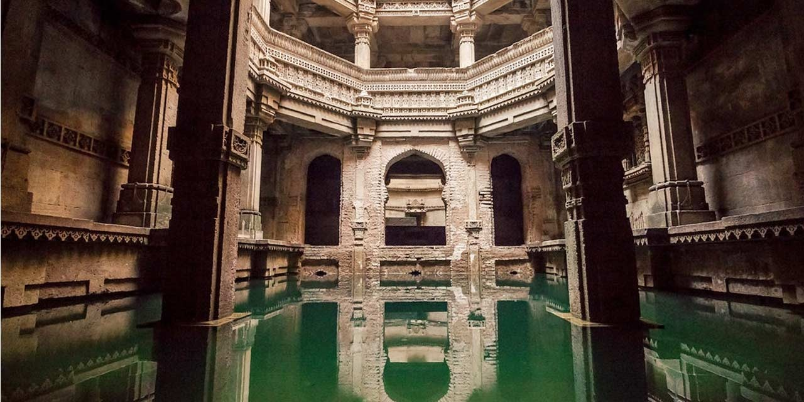

|
Ahmedabad: Gujarat's Cultural Gem
Discover the Heart of Western India |
| Introduction | History | Tourist Spots | Cuisine | Festivals | Shopping | Accommodation | Transportation | Best Time |
Welcome to AhmedabadAhmedabad, Gujarat's largest city, is a vibrant metropolis with deep-rooted history and culture. Known for its textile industry, mouthwatering cuisine, and architectural marvels, Ahmedabad offers a unique blend of tradition and modernity. As the first UNESCO World Heritage City in India, it boasts a rich tapestry of historical sites, from ancient mosques and temples to stepwells and havelis. The city's thriving business ecosystem, coupled with its commitment to education and innovation, makes it a dynamic hub for both commerce and creativity. Visitors can explore its bustling bazaars, savor the flavors of Gujarati cuisine, and immerse themselves in the warmth of Ahmedabadi hospitality. A Glimpse into HistoryFounded in 1411 AD by Sultan Ahmad Shah, Ahmedabad has witnessed the rise and fall of empires. From the Sultanate period to the Mughal era and the British rule, the city has absorbed diverse influences, reflected in its architecture and culture. Must-Visit Tourist Spots1. Sabarmati AshramSabarmati Ashram, once home to Mahatma Gandhi Sabarmati Ashram, situated on the banks of the Sabarmati River, was home to Mahatma Gandhi from 1917 to 1930. It served as one of the main centers of the Indian freedom struggle and the base for many of Gandhi's campaigns. Key Information:
2. Kankaria LakeKankaria Lake, a hub of entertainment and relaxation Kankaria Lake, the second largest lake in Ahmedabad, is a popular recreational spot. Built in 1451 by Sultan Qutbuddin, it now offers various attractions for visitors of all ages. Attractions around the lake:
3. Adalaj StepwellAdalaj Stepwell, a five-story architectural wonder Located in the village of Adalaj, this five-story stepwell is a fine example of Indo-Islamic architecture and sculpture. Built in 1498 by Queen Rudabai, it served both as a cultural and utilitarian space. Interesting Facts:
Savor Gujarati CuisineAhmedabad is a food lover's paradise, offering a wide array of vegetarian delicacies. Don't miss these local specialties:
For an authentic experience, try a traditional Gujarati Thali at Vishalla or Agashiye restaurants. Vibrant Festivals
Shopping DelightsAhmedabad is famous for its textiles. Visit these markets for an unforgettable shopping experience:
Where to StayAhmedabad offers a range of accommodation options:
Getting AroundAhmedabad has a well-developed public transportation system:
Best Time to VisitThe ideal time to visit Ahmedabad is from October to March when the weather is pleasant. Summers (April to June) can be extremely hot, while monsoons (July to September) bring high humidity. |
|
Contact Us: Adnan's Tourism Information Center #34 N.R, Old Airport Rd, Ahmedabad, Gujarat, India - 380001 Email: info@adnantourism.com | Phone: +91 79 2550 5478 |
© 2024 Ahmedabad Travel Blog. All rights reserved. PES1UG24CA006